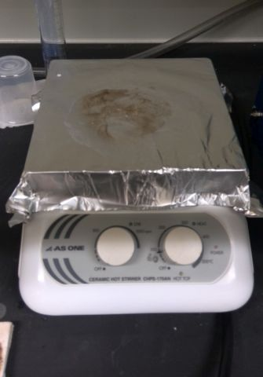

本研究室では、電子材料・磁性材料・光学材料に関する研究を行っています。
－磁性ガーネットの研究－
磁性ガーネットは，磁気的な状態に応じて，磁性ガーネットを透過する光の偏向面を回転させる機能を持った材料です。 サンプルは有機金属熱分解法により作製しています。 ハロゲン光をモノクロメータで単色光にして偏光子と検光子を用いて偏向面の回転角を測定します。
試料の作り方↓
１．スピンコーターで原料をガラス基板にコーティング
画像準備中
金属有機化合物分解法の原料溶液を基板に塗布し、台を回転させ遠心力で薄く引き伸ばしてコーティングする装置です。 有機金属熱分解法(Metal organic decompostion)とは，金属Mを含むカルボン酸塩M(RCOO)nを有機溶剤へ溶解させ、前駆体溶液とし， これをガラス基板や半導体基板に塗布し、乾燥、仮焼成、本焼成を経て目的の酸化物材料（ここでは磁性ガーネット）を作製する方法です。
スピンコート・コントローラ

金属有機化合物分解法の原料溶液を基板に塗布し、台を回転させ遠心力で薄く引き伸ばすコーティング方法をスピンコート法と呼びます。 このときの回転速度を制御するコントローラです。自作でPIC、バイポーラトランジスタ、FETでできています。


ホットプレートは基板に塗布したゾルゲル法や金属有機化合物分解法で用いる原料溶液を、乾燥したり、仮焼成するために使用しています。 スターラーはゾルゲル溶液を撹拌するときに用います。 また、ホットプレート付きなので加熱しながら撹拌できます。よく使うので複数台有。 加熱するとガスが発生するので，下のドラフトチャンバー内で加熱します。
ドラフトチャンバー（局所換気装置）

人体に有害な薬品や溶液を扱うときに、換気を行うための装置です。蒸発した薬品や溶液は室内には拡散せず、外に排気されるようになっています。
３．雰囲気置換用の電気管状炉

試料は高温により結晶化させます。結晶化させる雰囲気は大気だけでなく、窒素雰囲気や真空雰囲気、硫黄雰囲気など様々です。 どのような温度，雰囲気で結晶化させたかで特性が変わるので，いろいろな条件で実験します。
(C) 2014- 釧路工業高等専門学校 創造工学科 エレクトロニクスコース 機能材料研究室. All rights reserved.